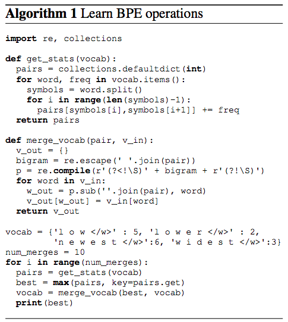

서브워드 알고리즘
서브워드와 관련한 유명한 알고리즘은 다음 네가지가 있습니다.
- Byte Pair Encoding (BPE)
- WordPiece
- Unigram Language Model
- SentencePiece
BPE
BPE(Byte Pair Encoding)는 서브 워드 사전 구축에 사용되는 알고리즘은 다음 그림과 같습니다.

WordPiece
워드 피스(WordPiece)는 일본어와 한국어의 음성 문제를 해결 하기 위해 나온 모델입니다.(2012년) 워드 피스는 BPE와 유사하며 차이점은 새로운 서브 워드를 만들 수 있다는 점입니다.
Unigram 모델
쿠도 연구자가 소개한 모델입니다. 이 모델이 가정 하는 것은 모든 서브워드는 독립적인 이며 서브 워드 시퀀스이 나타날 확률은 서브 워드 확률에 결정된다는 점입니다. 워드 피스와 유니그램 언어 모델은 서브 워드 어휘를 구축할 수 있습니다.
구글 센텐스피스
구글 센텐스피스는 비지도 기반의 서브 워드 텍스트 토크나이저(unsupervised text tokenizer)이면서 디토크나이저(detokenizer)입니다. 센텐스피스는 미등록 어휘(OOV:Out-of-Vocabulary) 대응한 어휘 모델을 생성 하겨 위해 입력 문장(unicode 가정)을 받아 언어에 의존하지 않은 서브 워드 모델을 학습할 수 있습니다. 토크나이저이면서 디토크나이저인 이유는 인코딩과 디코딩 처리를 하기 때문입니다.
-
인코딩 : 단어 목록을 입력으로 받으면, 각 단어의 서브 워드(sub-word)의 인덱스를 생성합니다.
-
디코딩 : 서브 워드 인덱스를 토큰으로 만들고 텍스트로 만듭니다.
인코딩은 서브워드 단위 유닛(subword unites)을 만들기 위한 세그멘테이션을 수행하는 과정입니다. 센텐스피스는 세그멘테이션을 위해 두가지 방식을 이용합니다. 첫째는 BPE(byte-pair-encoding) 방식이며, 둘째는 유니그램 언어 모델(unigram language model)입니다. 디코딩은 서브 워드를 다시 텍스트로 합치는 과정입니다. 예를 들어 공백은 미리 예약된 심벌인 ‘‘으로 치환 가능합니다.
Hello▁World.
그리고 서브 워드들로 나눌 수 있습니다.
[Hello] [▁Wor] [ld] [.]
공백 예약 되어 있습니다.은 텍스트를 나누는 기준이 되므로 서브워드시 처리된 ‘_‘을 공백으로 치환해 텍스트로 만듭니다.
pieces = "hello_! natural langugage processing."
detokenized = ''.join(pieces).replace('_', ' ')
print(detokenized)
실행 결과
hello ! natural langugage processing.
구글 센텐스피스를 설치해 보겠습니다.
pip install sentencepiece
센텐스피스를 실행해 보겠습니다. 먼저 센텐스피스를 적용할 코퍼스를 선전합니다. 성경 코퍼스를 이용하겠습니다.
import sentencepiece as spm
input_file = './sentence-piece/bible.txt'
templates = '--input={} --model_prefix={} --vocab_size={} --max_sentence_length=2048 --hard_vocab_limit=false'
이때 명령어에 해당하는 내용을 템플릿으로 만들어 두겠습니다. 이제 커맨드를 세팅하겠습니다.
# command 세팅
vocab_size = 15000
prefix = 'bible'
cmd = templates.format(input_file, prefix, vocab_size)
이어서 학습을 진행하겠습니다.
spm.SentencePieceTrainer.Train(cmd)
학습이 잘 되었는지 모델을 로드해 확인하겠습니다.
sp = spm.SentencePieceProcessor()
sp.Load('{}.model'.format(prefix))
모델을 로드해 학습 어휘를 출력해 보겠습니다.
# 어휘 출력
with open('{}.vocab'.format(prefix), encoding='utf-8') as f:
vocabs = [doc.strip() for doc in f]
print(vocabs)
print('어휘 숫자 = {}'.format(len(vocabs)))
전체 코드는 아래와 같습니다.
import sentencepiece as spm
input_file = './sentence-piece/bible.txt'
templates = '--input={} --model_prefix={} --vocab_size={} --max_sentence_length=2048 --hard_vocab_limit=false'
# command 세팅
vocab_size = 15000
prefix = 'bible'
cmd = templates.format(input_file, prefix, vocab_size)
# 학습
spm.SentencePieceTrainer.Train(cmd)
# 모델 로드
sp = spm.SentencePieceProcessor()
sp.Load('{}.model'.format(prefix))
# 어휘 출력
with open('{}.vocab'.format(prefix), encoding='utf-8') as f:
vocabs = [doc.strip() for doc in f]
print(vocabs)
print('어휘 숫자 = {}'.format(len(vocabs)))
실행 결과
...
'Job\t-15.7565', 'hum\t-15.761', 'hinkest\t-15.7739', '▁Bl\t-15.7741', '▁converte\t-15.7767', '▁ki\t-15.795', 'sfigure\t-15.7988', '▁Ata\t-15.8036', 'sented\t-15.8045', '▁leade\t-15.8051', '▁Jahze\t-15.8095', 'its\t-15.8144', 'lden\t-15.8159', 'din\t-15.8217', 'easts\t-15.8233', 'bits\t-15.8246', 'yon\t-15.8257', 'anoth\t-15.8267', 'ade\t-15.8271', 'tern\t-15.8284', '▁Josi\t-15.8444', 'bekah\t-15.848', '▁behav\t-15.8488', 'frain\t-15.853', '▁fello\t-15.8546', 'q\t-15.8548', 'Z\t-15.8549', 'x\t-15.855', 'C\t-15.8551', 'B\t-15.8552', 'J\t-15.8553', 'xed\t-15.8553']
어휘 숫자 = 12909
구글 센텐스피스의 공식 사이트는 아래와 같습니다.
참고 문헌
Taku Kudo, John Richardson(2018) SentencePiece: A simple and language independent subword tokenizer and detokenizer for Neural Text Processing. https://www.aclweb.org/anthology/D18-2012/